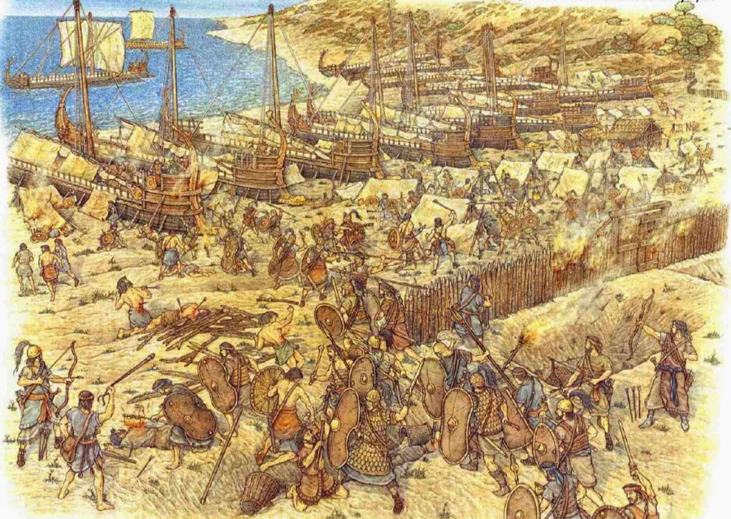
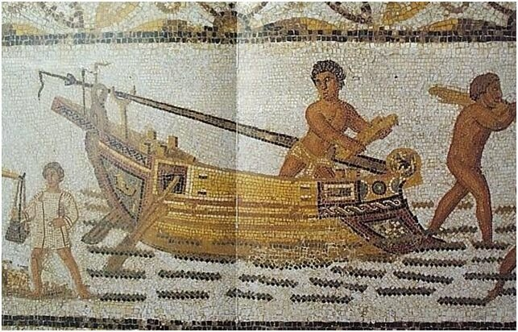
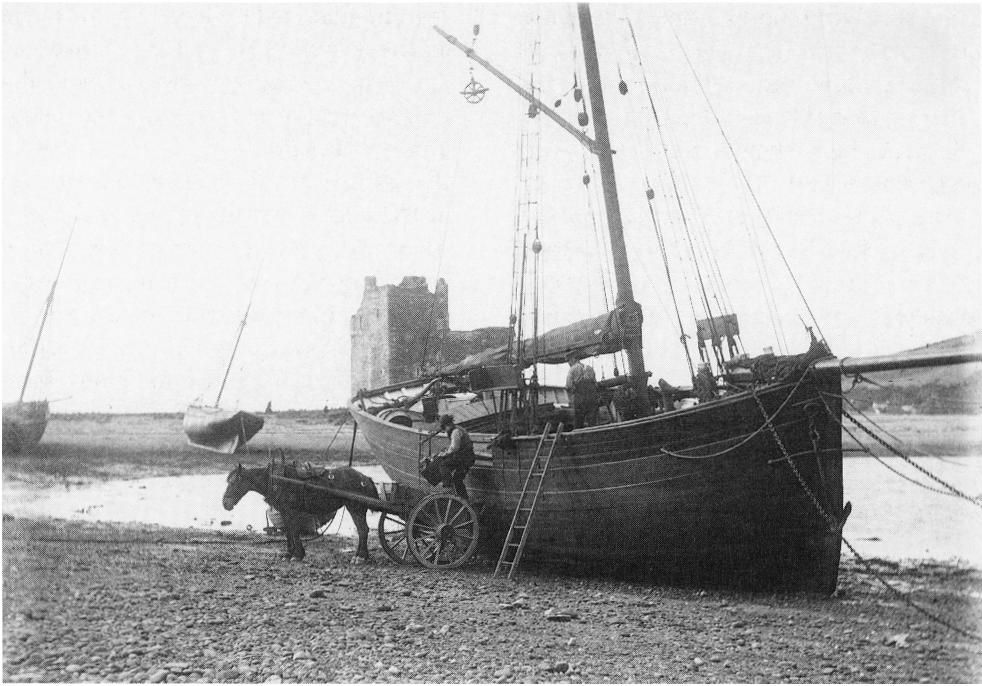
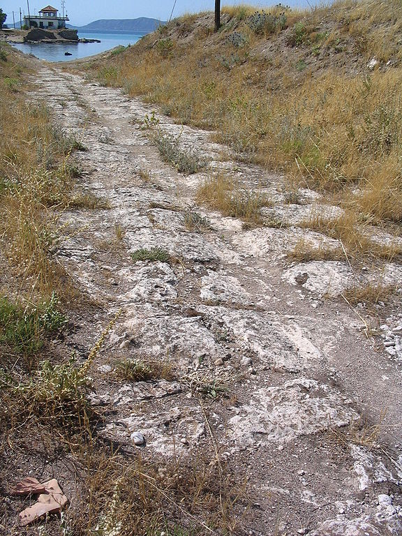
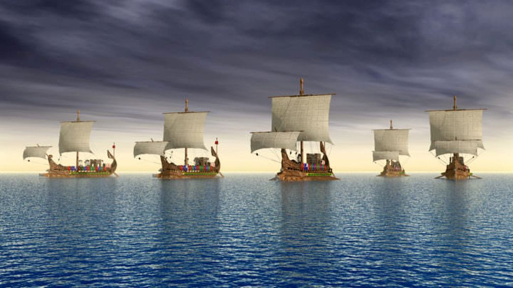
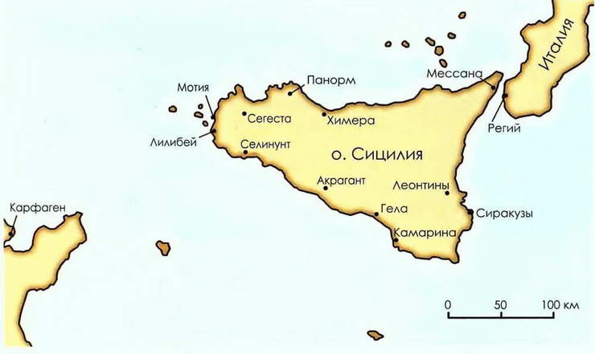
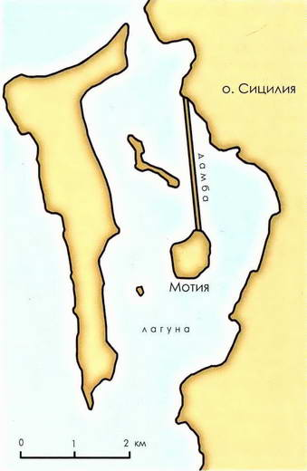
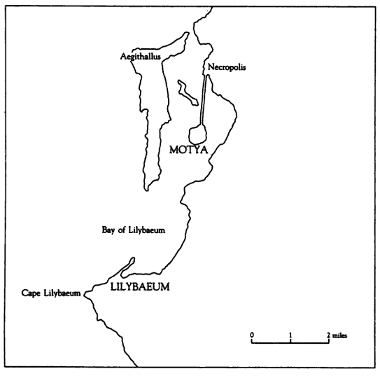

Животворящему его прихода слуху
От Ладоги в Неву флот следует по суху.
М. В. Ломоносов. Петр Великий
Кинулись все к кораблям. Под ногами бегущих вздымалась
Тучами пыль. Приказанья давали друг другу хвататься
За корабли поскорей и тащить их в широкое море.
Чистили спешно канавы. До неба вздымалися крики
Рвущихся ехать домой. У судов выбивали подпорки.
Илиада, 2.151-4. пер. Вересаева

Прежде всего, как наставил их Арг, опоясали судно,
Крепко сплетенным канатом они, натянув его туго
С той и с другой стороны, чтобы крепче держалися гвозди
В брусьях и смело корабль мог бы встретить волн шумных набеги. 370
По ширине корабля, сколько места она занимала,
Землю взрывали они, а также у носа, насколько
Должен корабль был руками влекомый продвинуться к морю,
И чем дальше, тем больше снижали пространство для киля...
Аполлоний Родосский. Аргонавтика. Кн. I, Пер. Г.Ф. Церетели
Пихта, сосна и «кедр», говоря вообще, идут для постройки судов: триеры и военные корабли делают из пихты, потому что она легка, а торговые суда — из сосны, потому что она не гниет. В некоторых местностях за неимением пихты и триеры делают из сосны. В Сирии и Финикии триеры строят из можжевельника — в этих странах и в сосне недостаток, — а на Кипре из алеппской сосны: она в изобилии растет на этом острове и ценится там выше сосны.
(2) Из этих деревьев приготовляют все части судна кроме киля: для триеры киль делают из дуба, чтобы он выдержал, если триеру придется тащить волоком, а для грузовых судов — из сосны. Если судно приходится тащить волоком, то под сосновый киль подкладывают еще и дубовый, а в судах меньшего размера — буковый.
Феофраст. Исследование о растениях. Перевод Сергеенко М.Е. (1951) (V, vii, 2).

Мозаика III в. из Hadrumetum (близ Суса, Тунис). Музей г. Бардо.

καὶ αὐτοὶ πρῶτοι ἀφίκοντο, καὶ ὁλκοὺς παρεσκεύαζον τῶν νεῶν ἐν τῷ Ἰσθμῷ ὡς ὑπεροίσοντες ἐκ τῆς Κορίνθου ἐς τὴν πρὸς Ἀθήνας θάλασσαν καὶ ναυσὶ καὶ πεζῷ ἅμα ἐπιόντες.
Сами лакедемоняне прибыли туда первые и занялись на Истме изготовлением перевозочных орудий для того, чтобы перетащить свои корабли из Коринфа через перешеек в море, обращенное к Афинам; они собирались напасть на врага разом с моря и с суши.
Перевод Ф. Мищенко
Первыми прибыли на Истм сами лакедемоняне и сразу принялись готовить волок для перевода кораблей через Истм из Коринфского моря в Саронический залив.
Перевод Стратановского.
Фукидид, 3.15.1

Александр застал, по словам Аристобула, в Вавилоне флот, поднявшийся из Персидского моря вверх по Евфрату (начальником был Неарх), и другой, прибывший из Финикии: 2 пентеры от финикийцев, 3 тетреры, 12 триер и около 30 тридцативесельных судов. Их всех в разобранном виде доставили из Финикии к Евфрату, в город Фапсак; там их собрали и сбили, и они уже по реке спустились к Вавилону.
Арриан. Поход Александра. – Алетейя, 1993 г.
Лисандр, когда его флот был собран к бою, вытащив на берег девяносто кораблей, находившихся в Эфесе, пребывал в бездействии, пока корабли конопатились и просушивались. Алкивиад же, услышав, что Фрасибул вышел из Геллеспонта, чтобы окружить осадными сооружениями Фокерею, переправился к нему, оставив во главе флота своего кормчего Антиоха, причем запретил ему нападать на корабли Лисандра. Антиох же вплыл из Нотия в Эфесскую гавань лишь с двумя кораблями — с тем, на котором он был кормчим, и еще одним — и прошел перед самым носом кораблей Лисандра. Лисандр сначала преследовал его, стащив в воду лишь несколько кораблей из своей эскадры; когда же афиняне пришли на помощь Антиоху с большим количеством кораблей, тогда и он выстроил все свои корабли в боевой порядок и поплыл против афинян. После этого и афиняне выплыли из Нотия, стащив в воду остальные триэры. Затем началось сражение, причем лакедемоняне стояли в боевом порядке, а афинские суда были беспорядочно рассеяны; бой продолжался до тех пор, пока афиняне не обратились в бегство, потеряв пятнадцать триэр.
Пер. С.Я. Лурье

Ведь, как мне удалось узнать, враги собираются напасть на наши осадные укрепления не только на суше, но одновременно и с моря на кораблях. И пусть вас не удивляют вражеские замыслы о нападении с моря. Действительно, наш флот (как это знают и наши враги) вначале был в превосходном состоянии: наши корабли были сухими, а команда в полном составе. Теперь же корабли пропитались водой, столько времени уже находясь на плаву, и команда поредела. Ведь мы не можем вытащить наши корабли на берег для просушки, потому что при равном, а пожалуй, и большем числе кораблей у неприятеля, нам постоянно приходится ожидать нападения. Неприятельские корабли открыто производят маневры, и в их воле и напасть на нас, и больше, чем у нас, возможности ставить корабли на просушку, потому что им не нужно стоять на якоре для наблюдения.
Пер. Стратановский

Дионисий, когда Гимилькон приплыл и загородил вход в Мотийскую гавань, сам, выведя из Мотии пехоту, расположился лагерем напротив и призвал моряков и воинов не бояться и приготовиться к переправе триер через окружающую гавань возвышенность. Место было ровное и глинистое шириной в двадцать стадий. Огородив это место бревнами, воины перевели через него за один день восемьдесят триер. Гимилькон, испугавшись, как бы Дионисий, переправив флот через возвышенность, напав на карфагенян у входа в гавань и заперев их там, не уничтожил их, отплыл при попутном северном ветре. Дионисий же и Мотию, и гавань, и флот спас.
Пер. Косинцева И.В.

50. (1) Тем временем Гимилькон, флотоводец карѳагенян, прослышав, что Дионисий вытащил свои боевые корабли на сушу, немедленно снарядил сто лучших триер; он допускал, что если появится внезапно, то легко захватит в гавани вытащенные на берег суда, и станет хозяйничать на море. Разом добившись этого, но полагал, что не только снимет осаду Мотия, но и перенесёт войну в город сиракузян. (2) Поэтому, выйдя в плавание с сотней кораблей, к ночи он прибыл в Селинунт, миновал мыс Лилибей, и на рассвете достиг Мотии. Поскольку своим появлением он застал врага врасплох, то часть кораблей стоящих на якоре у берега он протаранил, а другие поджёг, так как Дионисий не мог прийти к ним на помощь. (3) Затем он вошёл в гавань и выстроил свои корабли, как будто собирался атаковать вытащенные на берег суда противника. Дионисий сосредоточил свою армию у входа в гавань; но видя, что враг хочет напасть на корабли, оставленные в гавани, не рискнул спускать корабли на воду в гавани, поскольку он осознавал, что узкий проход позволит лишь нескольким кораблям противостоять многократно превосходящим силам противника. (4) В результате, воспользовавшись многочисленностью своих солдат, он без препятствий перетащил корабли по земле и благополучно спустил на воду за пределами гавани. Гимилькон атаковал первые корабли, но был удержан множеством снарядов, ибо Дионисий посадил на корабли большое число лучников и пращников, а кроме того сиракузяне убили много врагов, пуская с берега остроконечные стрелы при помощи катапульт. Это оружие породило великий страх, потому что было новым изобретением тех дней. В итоге Гимилькон не сумел добиться исполнения замысла и отплыл обратно в Ливию, решив, что морское сражение будет неблагоприятным, так как вражеских кораблей было в два раза больше.
Пер. Мещанский Д.В.
